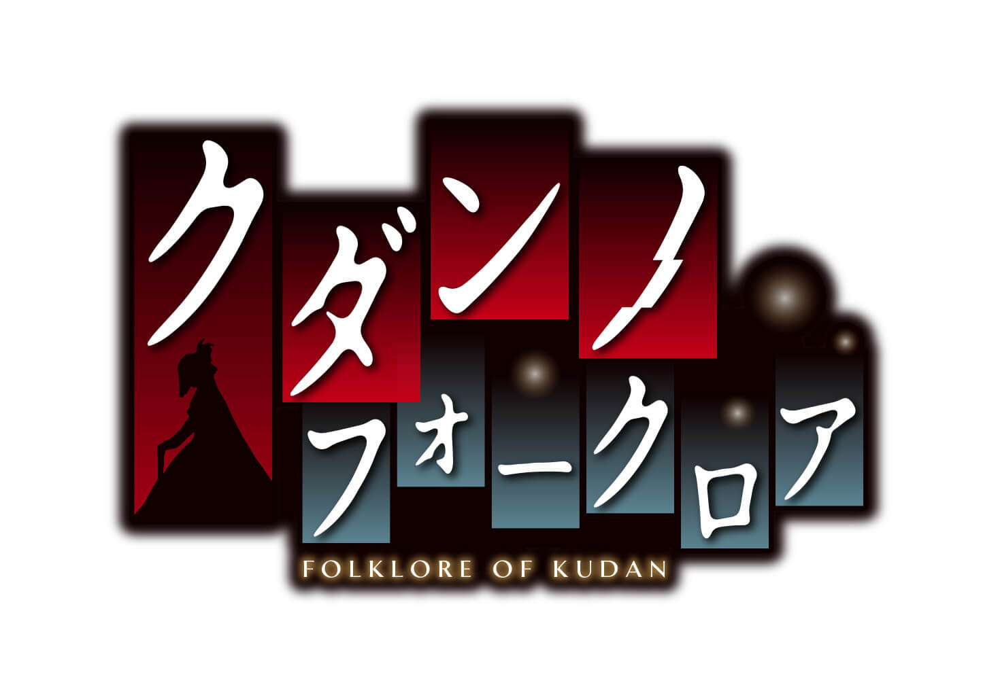

いよいよ今月4月26日（金）発売の百合系フォークロアＡＤＶ『クダンノフォークロア』
この作品のシナリオを担当されたシナリオライターの志水はつみさんへ執筆中の制作秘話や作品についてのお話を伺いして参りました！
志水さん、よろしくお願いします！
●『クダンノフォークロア』が生まれるまで
―――『クダンノフォークロア』というタイトルはどのように生まれたのでしょうか？
志水 はつみさん（以下、志水さん）
今作は物語の主軸となる怪異である“件”と、主人公の“九段朔夜”、舞台が“東京都千代田区九段”周辺で描かれることが多いため、それぞれの“クダン”をとり、伝承や民俗学、広義の意味で都市伝説を含む“フォークロア”を足すことで命名しました。
